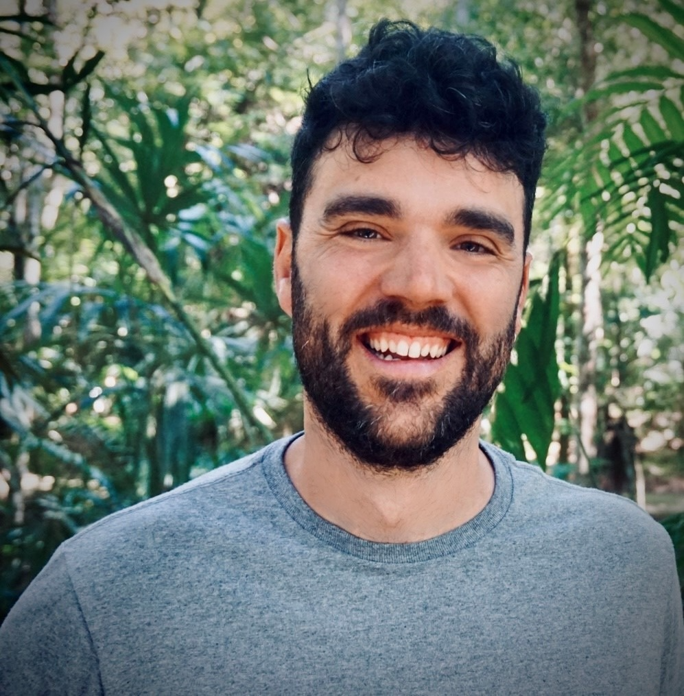

Investigador · Sociología Política
City St George's, University of London
Universidad Babeş-Bolyai, Rumanía
Felipe G. Santos
Investigo por qué la gente sale a la calle, cómo la extrema derecha construye poder y qué mantiene unidas a las democracias — o las destruye. Mi trabajo combina encuestas a gran escala, experimentos de campo y etnografía para entender la participación política en Europa en un momento de profunda incertidumbre.
Soy investigador en el proyecto INTERFACED (Horizon Europe, City St George's) y el proyecto TakePart (NextGenerationEU, Universidad Babeş-Bolyai).
Investigación
Explorar publicaciones por tema →Cuidados, Empoderamiento y Movimientos Sociales
Cómo la solidaridad, la empatía y el cuidado mutuo funcionan como recursos políticos dentro de los movimientos sociales que luchan por los derechos a la vivienda.
La Extrema Derecha en Europa
Partidos de extrema derecha, instituciones educativas, movimientos antigénero y estrategias en la sociedad civil — cómo la derecha radical construye poder.
Protesta y Participación Política
Quién protesta, cómo y por qué — desde manifestaciones presenciales hasta el activismo digital. Análisis a nivel individual de la participación en protestas.
Política Electoral y No Electoral
Cómo los movimientos de protesta y la política electoral interactúan — a través de partidos de movimiento, votantes de protesta y el límite fluido entre la calle y las urnas.
Calidad Democrática y Retroceso Democrático
Estrategias de la oposición, coaliciones electorales y actitudes de los ciudadanos ante la erosión democrática — con investigación comparada en Hungría, España y Europa del Sur.